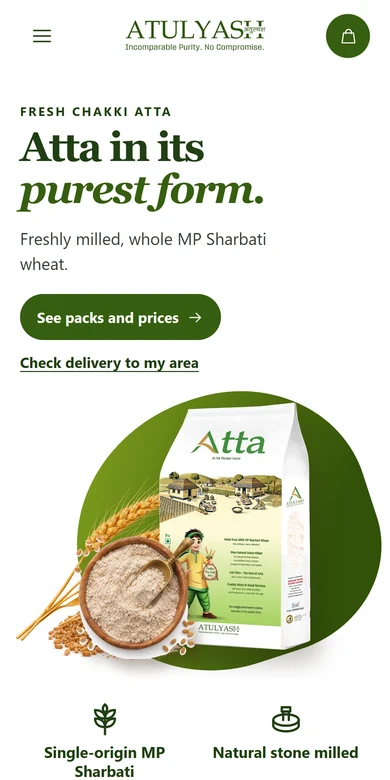
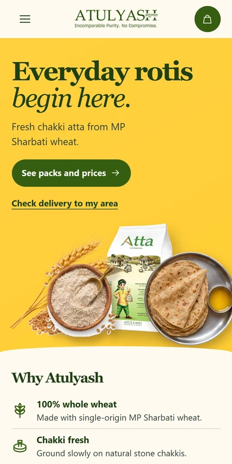
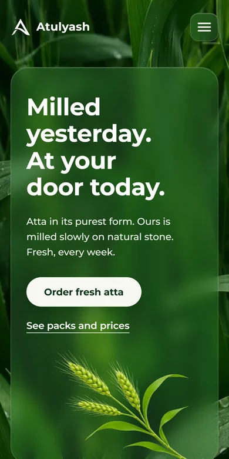
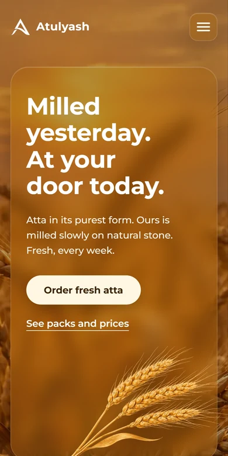
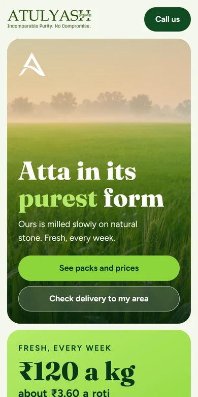

Homepage design review
Five directions for the Atulyash redesign. Open any design to see the full page.
-
Field to Home
A white canvas with harvest green and a clear path from wheat to delivery.
Open design
-
Golden Kitchen
Bright yellow, deep green and close-up photography from the kitchen.
Open design
-
Glass Field
Young green wheat and translucent panels frame the milling story.
Open design
-
Golden Glass
Amber panels set against a field of ripe wheat.
Open design
-
Fresh Bento
Lime and forest green tiles give the pack, the milling timeline and Veer their own space.
Open design